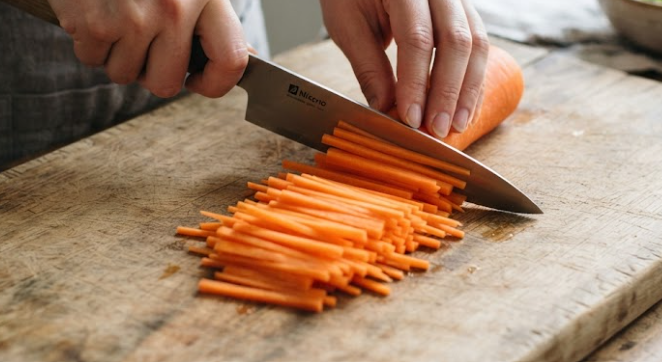
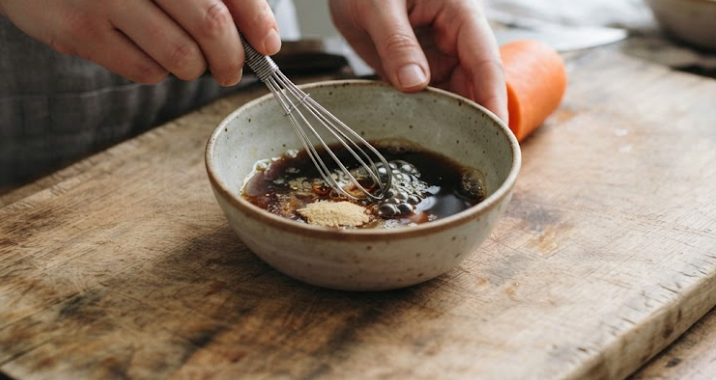
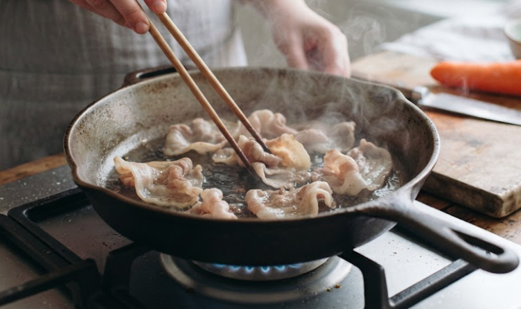
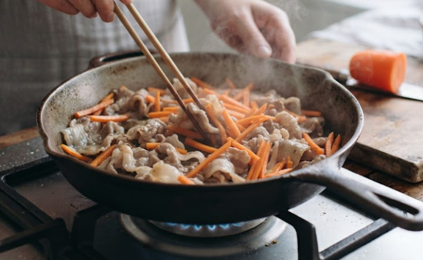
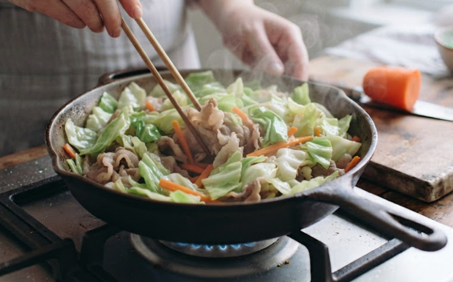
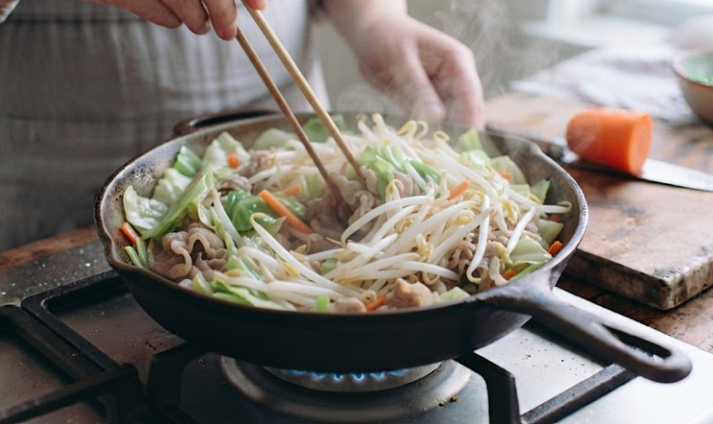
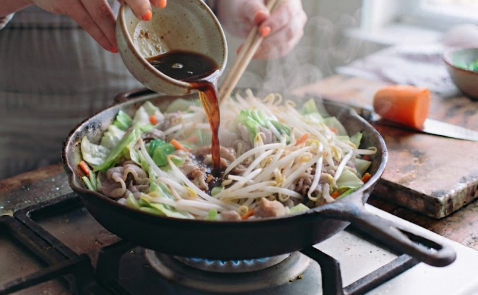
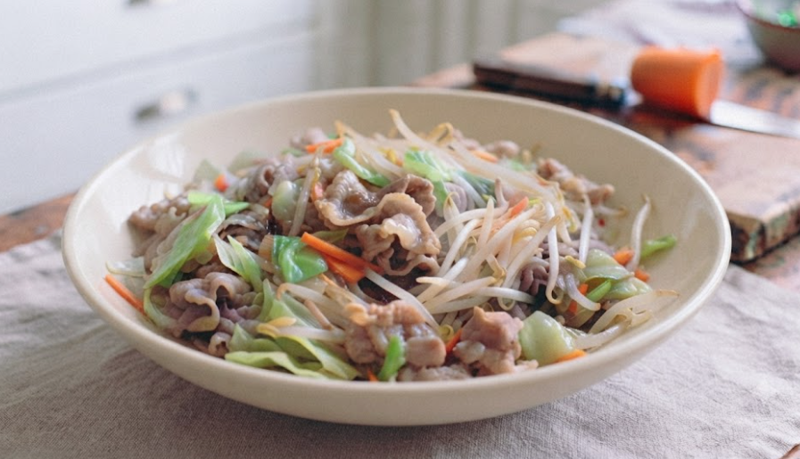

材料（一人分）
- ・豚こま肉150g
- ・もやし1/2袋
- ・キャベツ1〜2枚
- ・にんじん1/6本
- ・サラダ油小さじ2
- ・塩こしょう少々
- 合わせ調味料
- ・しょうゆ小さじ2
- ・料理酒小さじ2
- ・鶏ガラスープの素小さじ1/2
必要な道具
- ・フライパン
- ・小さいボウル
- ・包丁
- ・まな板
- ・菜箸または木べら
注目ポイント
-
 火加減に注意
火加減に注意 -
 しっかり加熱
しっかり加熱 -
 アレンジしても◎
アレンジしても◎
作り方
① キャベツは食べやすい大きさに切り、 にんじんは細切りにします。 もやしは軽く洗って水気を切っておきます。

② 小さいボウルにしょうゆ、 料理酒、鶏ガラスープの素を入れて 混ぜておきます。

③ フライパンにサラダ油を入れて中火で熱し、 食べやすい大きさに切った豚肉を炒めます。 色が変わるまで炒め、軽く塩こしょうを振ります。

④ 豚肉に火が通ったら、 にんじんを加えて約1分炒めます。

⑤ キャベツを加えて 少ししんなりするまで炒めます。 炒めすぎると水分が出るので注意しましょう。

⑥ 最後にもやしを加え、 強めの中火で約1分炒めます。

⑦ 合わせ調味料を回し入れ、 全体に味がなじむまでさっと炒めます。 味を見て、足りなければ塩こしょうで調整します。

⑧ 炒めすぎず、 全体になじんだら火を止めます。 器に盛り付けて完成です。

調理のコツ
具材はにんじん、
キャベツ、もやしの順で入れましょう。
もやしは最後に短時間で炒めると、
シャキシャキ食感が残ります。
アレンジ
ごま油を少し加えると
香りがよくなります。
オイスターソースを
小さじ1加えると、
中華風でコクのある味になります。
白菜などの野菜を加えても
おいしく作れます。